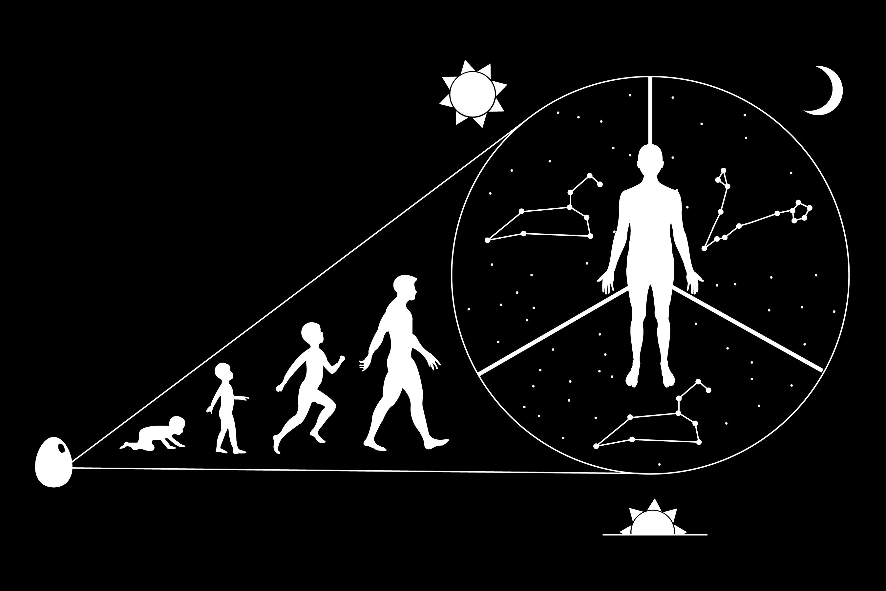

Communicate with Outer Space

The original Pioneer plaques are a pair of engraved aluminum plates that were meant to communicate a message about Earth to other celestial beings. This iteration of a pinoeer plaque represents a way in which we, the people of Earth, use our spacial surroundings to form a sort of identity. Astrology is a fun part of our culture from self-reflection to choosing a compatible mate. Our star-bound identity is stagnant, as it sticks with us from our birth time throughout our lives. Maybe this plaque will inspire beings from other planets to look at how the stars are aligned from their point of view.